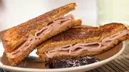

Sweet and Spicy turkey sandwich

Description
I really don't know what to say about this "sandwhich" other than it looks funky and not all that appitizing , but you know what they say. Don't knock until
you try it.
ingredients
- 2 slices of country(?) bread
- 4 slices of roasted turkey lunch meat
- 1 slice of pepperjack cheese(only pepperjack no other fancy cheese)
- 2 teasppons of butter
- 4 teasppons of strawberry preservtives or whatever
Directions
- Heat skillet up and place butter bread butter side down then top the bread with lunch meat and cheese
- flip then cook for 3-5 minutes
- remove from heat and/or topsandwhich with preservtives or place them on the side.